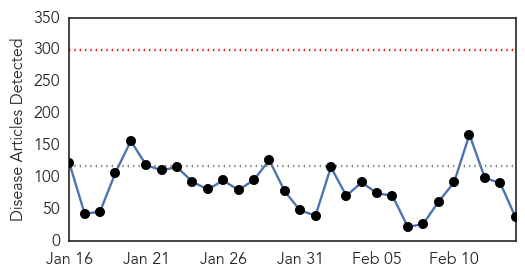
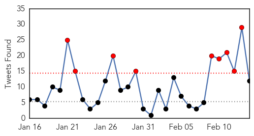
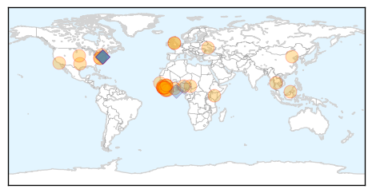
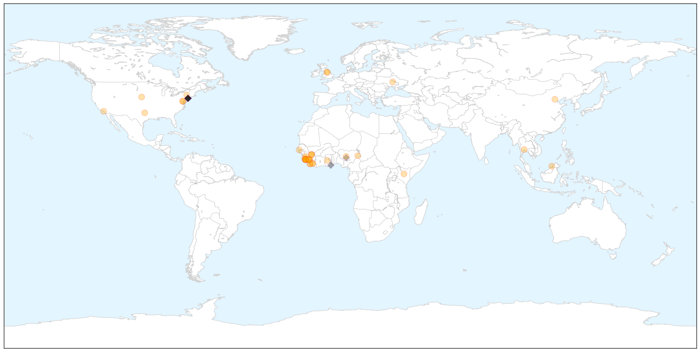
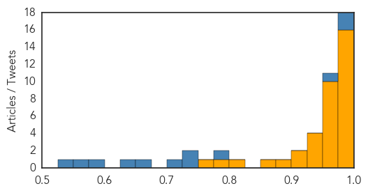

Chikungunya
30-Day Web Trend
3 alerts, 0 warnings

30-Day Twitter Trend
0 alerts, 0 warnings

Article Locations


Article Confidences

Top Articles:
-
No articles found for Feb 14, 2015
Top Tweets:
-
No tweets found for Feb 14, 2015
Ebola
30-Day Web Trend
0 alerts, 0 warnings

30-Day Twitter Trend
9 alerts, 0 warnings

Article Locations

X

Article Confidences
Top Articles:
- 1.000
- U.S. intervention helps turn Ebola tide
- 0.999
- Ebola: UN health agency turns to foreign medical teams in last phase of combat against virus
- 0.999
- Sierra Leone quarantines 700 homes after Ebola case
- 0.998
- How long is an Ebola victim's body contagious? You don't want to know
- 0.997
- Sierra Leone quarantines 700 homes after Ebola case
- 0.992
- Ebola from Corpses? Possible, Says NIH
- 0.992
- New Ebola Cases Show First Rise In 2015
- 0.989
- Winnipeg Free Press
- 0.989
- Gambian government lifts travel ban on Ebola affected countries
- 0.989
- Guinea's Grand Imam Pulls No Punches In His Ebola Message
- 0.987
- UN Economic, Social Council President urges action 'now' to bolster health systems in Ebola-hit counties
- 0.983
- Sierra Leone locks down part of capital after spike in Ebola cases
- 0.982
- Ebola Disease ‘Not Yet Beaten’ as UNDP Chief Calls for Vigilance
- 0.982
- Texas families isolated by Ebola struggled for basics
- 0.980
- Domestic dynamics behind Russia's foreign policy
- 0.980
- Senate Confirms Obama's Pick Ashton Carter for Pentagon Chief
- 0.972
- Kenya Airways to resume flights to West Africa soon
- 0.963
- Untitled Article
- 0.962
- Sierra Leone: The Ebola warriors in the situation room - Sierra Leone
- 0.951
- West Coast ports dispute to be mediated by Labour Secretary
- 0.951
- Massive misappropriation of Ebola Funds uncovered in Sierra Leone
- 0.951
- ‘Liberia’s Ebola worse than civil war’
- 0.951
- Boko Haram Fight Intensifies In West Africa
- 0.951
- Modi invites global manufacturers to Make in India
- 0.951
- UN deputy chief, top Sudan official meet in New York, discuss peace, security issues
- 0.951
- UN warns of 'urgent' humanitarian situation as Boko Haram attacks spill over Nigeria border
- 0.937
- OXFAM announces strategies to develop Africa
- 0.933
- Sierra Leone audit claims Ebola funds unaccounted for
- 0.933
- UNMEER condemns attacks against Ebola responders in Guinea - Guinea
- 0.930
- Anti-Ebola Medical Workers Take Family Reunion Photos
- 0.919
- Sierra Leone fails to account for Ebola funds
- 0.914
- Sierra Leone failed to properly account for Ebola funds- auditor
- 0.897
- World Bank to invest $15m in reviving agriculture in Ebola hit countries
- 0.873
- Attacks on Red Cross Increase in Guinea
- 0.818
- Crowds attack Ebola facility, health workers in Guinea
- 0.777
- Ebola Crisis: Natives attack Red Cross Team in Guinea
- 0.758
- Sierra Leone loses track of $3.3mn in Ebola funds
Top Tweets:
- 0.994
- Ebola Update: 22903 confirmed probable & suspected cases of Ebola reported in 3 most affected countries with 9194 deaths. EbolaResponse
- 0.991
- RT: Ebola Update: 22903 confirmed probable & suspected cases of Ebola reported in 3 most affected countries with 9194 deaths. …
- 0.957
- RT: Ebola cases increase for 2nd week & Ebola volunteers targeted by community violence. Get your top Ebola news here http:/…
- 0.783
- Ebola Epidemic Should End in May Say Disease Modelers - MIT Technology Review (blog) http://t.co/nUqRlks1Nz ebola EVD
- 0.732
- Sierra Leone audit claims Ebola funds unaccounted for - BBC News http://t.co/i4TpadGmzx ebola EVD
- 0.732
- Sierra Leone audit claims Ebola funds unaccounted for - BBC News http://t.co/13We6NeTl9 ebola EVD
- 0.722
- RT: @SocGenMicro I'll miss Annual Conference as I'm volunteering in Ebola diagnostic lab in Sierra Leone. Been going to AC …
- 0.654
- [UNNEWS] Ebola: UN health agency turns to foreign medical teams in last phase of combat against virus http://t.co/2WLZQazxN2 EBOLANEWS
- 0.626
- RT: [UNNEWS] Ebola: UN health agency turns to foreign medical teams in last phase of combat against virus http://t.co/2WLZQazxN…
- 0.583
- Hi we need help locating expert people in BSL3 lab operation for Trainning in Africa (no Ebola countries yet) on our Mobile BSL3
- 0.558
- Hi we need BSL3 experts to train Health workers in Africa on hands on ops testing Ebola in our Mobile BSL3 Labs. Anyone?
- 0.532
- Dallas-area families isolated by Ebola struggled for basics - Dallas Morning News http://t.co/S0d25B7LqV ebola EVD